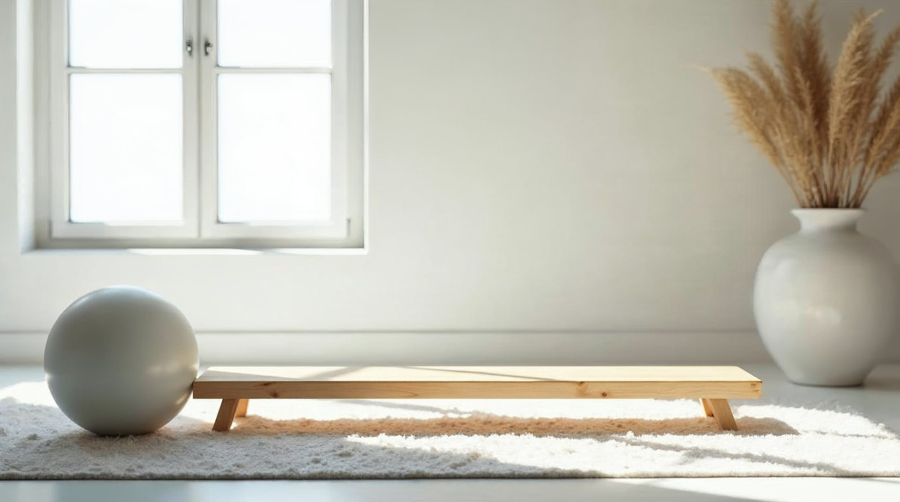
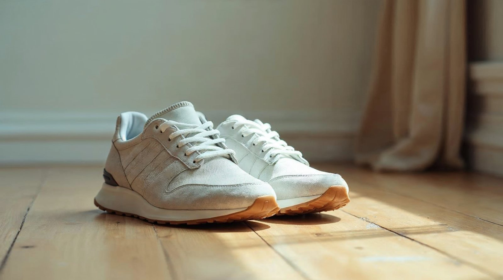
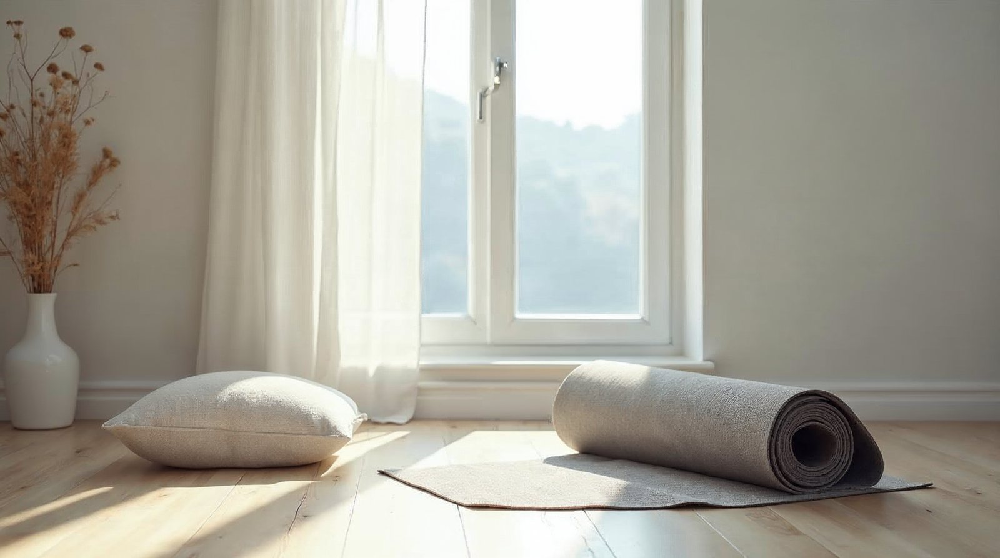

이종호 한의사 감수좋은꿈참사랑한의원 대표원장 (한의사 면허번호 19769)발행 2026-11-22 · 수정 2026-11-26
이 글의 차례
체형과 발을 살피는 목적은 통증이 왜 한쪽에만 되풀이되는지 실마리를 찾는 데 있습니다. 진료실에서는 서 있는 자세를 앞과 뒤, 옆에서 보고, 걷는 모습과 한 발로 서는 균형, 발 모양과 신발 밑창이 닳은 모양까지 함께 봅니다. 이렇게 본 내용은 결과표 한 장으로 끝나는 검사가 아니라, 아픈 동작과 나란히 놓고 통증의 이유를 가늠하는 참고 자료입니다.
체형의 작은 좌우 차이는 대부분의 사람에게 있어 그것만으로 걱정할 일은 아닙니다. 다만 같은 쪽 어깨·허리·무릎이 몇 주 넘게 번갈아 불편하거나 한쪽 신발만 유독 빨리 닳는다면 한 번 살펴볼 만합니다. 측정 장비를 쓰는 검사는 의료기관마다 갖춘 장비가 달라, 장비 검사를 원하시면 방문 전 전화(02-815-7510)로 확인해 주세요.
왜 체형과 발을 함께 살필까요
- 한쪽 어깨나 골반이 기울면 반대쪽 근육이 더 오래 버티게 되어 특정 부위만 반복해서 뻐근할 수 있습니다.
- 발은 몸을 받치는 바닥이라, 아치 모양이나 체중이 실리는 위치가 달라지면 무릎과 골반, 허리까지 부담이 이어지기도 합니다.
- 예전에 접질린 발목은 통증이 사라진 뒤에도 그쪽에 체중을 덜 싣는 걸음 습관을 남기기도 합니다.
- 한쪽으로 메는 가방, 다리 꼬기, 늘 같은 쪽으로 아이를 안는 습관이 몸의 균형에 흔적을 남기기도 합니다.
왜 아픈 곳과 기운 곳이 다를 수 있을까요
몸은 한 부분이 버거우면 다른 부분이 대신 일을 나눠 맡습니다. 예를 들어 왼쪽 발목이 덜 굽혀지면 걸을 때 왼쪽 무릎이 바깥으로 돌거나 골반이 들리며 그 몫을 메우고, 이런 걸음이 몇 달 쌓이면 정작 불편은 허리나 반대쪽 무릎에서 먼저 느껴질 수 있습니다.
그래서 저는 아픈 자리를 가장 먼저 짚되, 그 자리에서만 답을 찾지 않으려 합니다. 위아래로 이어진 관절이 어떻게 움직이는지 함께 보면, 같은 쪽이 왜 자꾸 불편해지는지 설명이 되는 경우가 많습니다.
반대로 기울어 보이는 곳이 있어도 전혀 불편하지 않다면, 그 기울기는 그 사람에게 익숙한 균형일 수 있습니다. 모양보다 불편과 함께 볼 때 의미가 있다고 말씀드리는 이유입니다.
무엇을 살피나요
- 앞뒤와 옆에서 본 어깨 높이, 골반 높이, 척추가 휘어진 정도
- 옆에서 봤을 때 귀·어깨·골반·복사뼈가 한 줄에 가까운지
- 무릎이 안쪽으로 모이거나 바깥쪽으로 벌어지는지, 발끝이 어느 쪽을 향하는지
- 걸을 때 보폭과 팔 흔들림의 좌우 차이, 한쪽으로 기우는지
- 한 발 서기와 쪼그려 앉기에서 어느 쪽이 더 흔들리는지
- 발 아치의 높이, 엄지발가락이 휜 정도, 굳은살이 생긴 위치(체중이 실리는 곳의 흔적)
- 신발 밑창이 닳은 위치와 좌우 차이
먼저 이렇게 여쭙니다
- 어느 부위가 언제부터 불편한가요?
- 한쪽 어깨가 처지거나 신발 굽이 한쪽만 닳는 편인가요?
- 오래 서 있거나 걸을 때 더 불편한가요?
- 예전에 발목이나 무릎, 허리를 다친 적이 있나요?
- 오래 걷고 난 뒤 어느 쪽 다리가 더 피곤한가요?
- 가방을 메는 쪽, 아이를 안는 쪽, 자는 방향처럼 한쪽으로 치우친 습관이 있나요?
일상에서 먼저 해 볼 수 있는 것
- 가방은 양쪽 어깨로 메거나 메는 쪽을 하루씩 번갈아 바꾸기
- 다리를 꼬고 앉는 습관이 있다면 꼬는 쪽을 의식해 횟수를 줄여 보기
- 서 있을 때 한쪽 다리에만 기대지 않고 양발에 체중을 고르게 싣기
- 밑창이 한쪽으로 많이 닳았거나 쿠션이 꺼진 신발은 바꾸기
- 젖은 발로 마른 수건이나 종이 위에 서서 발자국 모양을 사진으로 남겨 두기
- 같은 자리, 같은 옷차림으로 앞과 옆에서 선 자세 사진을 찍어 두기
체형 사진은 어떻게 찍어야 비교가 될까요
집에서 찍은 사진은 몇 주 뒤의 내 모습과 나란히 놓을 때 쓸모가 커집니다. 다만 찍을 때마다 조건이 달라지면 몸이 바뀐 것인지 사진이 달라진 것인지 알기 어렵습니다. 그래서 저는 몇 가지 약속을 지켜 찍어 보시라고 말씀드립니다.
- 같은 장소, 같은 시간대(가능하면 아침)에 몸에 붙는 옷을 입고 찍습니다.
- 휴대전화는 배꼽 높이에 두고, 화면이 기울지 않게 선반이나 의자에 세워 둡니다.
- 맨발로 서서 두 발 사이를 주먹 하나쯤 벌리고, 평소처럼 편하게 섭니다.
- 앞, 뒤, 왼쪽 옆, 오른쪽 옆 네 방향을 한 장씩 남깁니다.
- 일부러 바르게 서려고 힘을 주지 않습니다. 평소 모습이 담겨야 비교가 됩니다.
사진 속 작은 차이 하나하나에 마음 쓰실 필요는 없습니다. 몇 주 간격으로 놓고 보았을 때 같은 방향으로 계속 기우는지, 아픈 쪽과 기운 쪽이 겹치는지를 보려는 것이 목적입니다.
비슷해 보여도 다르게 보는 경우
- 골반 높이가 달라 보여도 실제 다리 길이 차이보다는 한쪽 무릎을 살짝 굽히고 서는 습관 때문인 경우가 많아, 선 자세와 누운 자세를 함께 비교해 봅니다.
- 등이 한쪽으로 휜 듯 보일 때, 앞으로 숙이면 사라지는 기울기와 숙여도 한쪽 등이 솟아 보이는 경우는 다르게 봅니다. 뒤의 경우, 특히 성장기라면 영상 검사가 가능한 의료기관 확인을 함께 권합니다.
- 발 아치가 낮아 보여도 까치발을 들 때 아치가 다시 생기는 발과, 들어도 그대로 납작한 발은 살필 내용이 다릅니다.
- 굳은살이 두꺼운 자리는 체중이 많이 실리는 곳이라는 흔적일 뿐, 그 자체를 통증의 이유라고 단정하지는 않습니다.
발과 신발은 어떻게 살펴 오시면 좋을까요
- 가장 자주 신는 신발을 신고 오시거나 밑창 사진을 찍어 오세요. 뒤꿈치 바깥쪽이 조금 닳는 것은 흔한 모양입니다.
- 안쪽만 유독 닳는다면 발이 안쪽으로 무너지듯 디딜 수 있고, 앞쪽 가운데가 닳는다면 발 앞쪽에 체중이 많이 실릴 수 있습니다.
- 신발 뒤축을 꺾어 신거나 끈을 느슨하게 둔 채 신는 습관도 걸음에 영향을 줄 수 있어 함께 여쭙니다.
- 실내에서 맨발로 지내는 시간이 긴지, 딱딱한 바닥에서 오래 서 있는지도 말씀해 주세요.
상황별 예시
- 예를 들어 노트북 가방을 늘 오른쪽 어깨에 메고 출퇴근하는 직장인이라면, 양쪽 어깨 높이가 달라 보이고 목과 어깨 한쪽이 당길 수 있습니다. 백팩으로 바꾸거나 메는 쪽을 번갈아 바꾼 뒤 2~3주 동안 목과 어깨의 느낌을 적어 보세요.
- 예를 들어 하루 종일 다리를 꼬고 앉아 공부하는 수험생이라면, 골반 높이가 달라 보이고 한쪽 엉덩이만 저리다고 느낄 수 있습니다. 엉덩이를 의자 깊숙이 넣고 양발을 바닥에 붙이는 것부터 해 봅니다.
- 예를 들어 오래전에 발목을 여러 번 접질렸던 어르신이라면, 그쪽 발에 체중을 덜 싣는 걸음이 굳어 반대쪽 무릎이나 허리가 먼저 불편해질 수 있어 걸음과 신발을 함께 살펴봅니다.
- 예를 들어 주말마다 등산을 다니는데 내리막에서만 한쪽 무릎이 시큰하다면, 내려갈 때 체중을 받는 발의 아치와 무릎 방향을 함께 보고, 등산화 밑창이 닳은 모양도 살펴봅니다.
- 예를 들어 하루 종일 서서 일하며 한쪽 다리에 기대 쉬는 습관이 있다면, 기대는 쪽 골반과 무릎 바깥이 먼저 뻐근할 수 있어 서 있는 동안 체중을 옮겨 싣는 연습부터 해 봅니다.
집에서 해 보는 간단한 균형 확인
진료실에서 보는 움직임 가운데 몇 가지는 집에서도 안전하게 해 볼 수 있습니다. 넘어지지 않도록 벽이나 식탁 옆에서, 맨발로 해 보세요.
- 한 발 서기: 양손을 허리에 두고 한 발씩 들어 몇 초 버티는지 세어 봅니다. 좌우 차이가 큰지가 중요합니다.
- 제자리 쪼그려 앉기: 거울을 보며 천천히 앉았다 일어설 때 무릎이 안쪽으로 모이는지, 몸이 한쪽으로 쏠리는지 봅니다.
- 까치발 들기: 양쪽 뒤꿈치를 들었다 내리며 한쪽 발목이 바깥으로 꺾이거나 먼저 지치는지 살핍니다.
- 눈 감고 제자리 걷기: 30초쯤 제자리에서 걸은 뒤 눈을 떴을 때 몸이 한쪽으로 돌아가 있는지 확인합니다.
결과를 숫자로 적어 두면 생활 습관을 바꾼 뒤 다시 해 보며 비교할 수 있습니다. 어지럽거나 휘청거리면 바로 멈추고 무리해서 이어 가지 않습니다.
아이와 어르신은 무엇을 더 살피나요
성장기 아이는 키가 자라는 속도에 따라 자세가 짧은 기간에도 달라질 수 있습니다. 그래서 한 번 본 모습으로 판단하기보다 몇 달 간격으로 같은 조건의 사진을 남겨 두고, 책가방 무게와 책상 높이, 오래 휴대전화를 보는 자세를 함께 여쭙니다.
어르신은 걸음의 폭과 속도, 발을 끌며 걷는지, 계단에서 난간을 얼마나 의지하는지를 더 살핍니다. 발톱이나 굳은살 때문에 디딜 때 아파 걸음이 바뀐 경우도 있어, 발을 직접 보여 주시면 도움이 됩니다.

스스로 점검해 보세요
- 거울 앞에 서면 한쪽 어깨나 골반이 눈에 띄게 낮아 보인다
- 걷다 보면 치마나 바지가 한쪽으로 돌아가 있다
- 신발 한 짝만 밑창이 유독 빨리 닳는다
- 한 발로 서면 한쪽이 확연히 더 흔들린다
- 같은 쪽 어깨·허리·무릎이 번갈아 불편하다
- 오래 걷고 나면 늘 같은 쪽 다리가 먼저 피곤하다
- 발바닥 굳은살이 한쪽 발에만 두껍게 생긴다
여러 항목에 해당하면서 통증이 몇 주째 이어진다면, 체형만 따로 보기보다 아픈 동작과 함께 살펴보시길 권합니다.

한의원에서 함께 살필 수 있는 경우
- 몸의 균형이 한쪽으로 기운 것 같은 경우 자세와 발의 상태를 함께 살핍니다.
- 발바닥 통증이나 무릎 통증이 반복되는 경우 발과 무릎, 골반이 어떻게 이어져 움직이는지 봅니다.
- 한쪽 신발만 빨리 닳는 경우 걸음걸이와 체중이 실리는 방향을 확인합니다.
- 통증 없이 체형만 걱정되는 경우 지금 상태를 함께 보고 생활에서 바꿔 볼 것부터 말씀드립니다.
좋은꿈참사랑한의원에서는 첫 방문 때 언제, 어떤 자세와 동작에서 불편한지를 먼저 충분히 듣습니다. 이어서 모든 분께 맥을 짚고, 서 있는 모습을 앞·뒤·옆에서 본 뒤 걷기, 한 발 서기, 허리 숙이기 같은 움직임과 좌우 근력을 확인합니다.
아픈 자리의 근육과 힘줄을 눈으로 볼 필요가 있다고 판단되면 초음파로 함께 봅니다. 그다음 추나·침·약침·온열 가운데 지금 상태에 맞는 방법과 순서를 정하고 그 이유를 설명해 드립니다. 귀가 전에는 신발·가방·앉는 습관처럼 생활에서 바꿔 볼 것과 다음에 다시 확인할 동작을 알려 드립니다.
살펴본 내용은 어떻게 쓰이나요
체형과 발을 본 내용은 그날의 진료 방향을 정하는 데 씁니다. 예를 들어 오른쪽 골반이 높고 오른발 바깥쪽으로 체중이 실리는데 오른쪽 허리가 아프다면, 아픈 자리만이 아니라 그쪽으로 체중이 쏠리는 이유를 함께 살핍니다.
처음 본 모습은 다음 방문 때의 기준점이 되기도 합니다. 같은 방법으로 다시 서 보고 걸어 보며, 생활 습관을 바꾼 뒤 무엇이 달라졌고 무엇은 그대로인지 함께 확인합니다. 저는 숫자 하나로 좋고 나쁨을 가르기보다 불편하던 동작이 편해졌는지를 더 중요하게 봅니다.
체형은 몇 주 만에 눈에 띄게 바뀌기보다 생활 습관이 쌓이며 천천히 달라집니다. 그래서 처음부터 큰 변화를 기대하기보다, 매일 반복하는 가방 메기와 앉는 자세처럼 작은 것 하나를 꾸준히 바꾸는 쪽을 함께 정합니다.
이렇게 기록해 오시면 상담이 쉬워집니다
- 불편한 부위와 오래 서 있거나 걸을 때의 변화
- 자주 신는 신발(밑창 닳은 모양을 사진으로 찍어 오면 좋습니다)
- 예전에 다친 발목·무릎·허리와 그 시기
- 한쪽으로 메는 가방, 다리 꼬기 같은 습관
- 최근 늘어난 운동이나 걷는 양
- 집에서 찍어 둔 선 자세 사진이나 발자국 사진
- 집에서 해 본 한 발 서기 시간과 좌우 차이

얼마나 지켜보고 언제 상담할까요
- 가방·신발·앉는 습관을 바꾼 뒤 2~3주는 불편한 부위가 어떻게 달라지는지 지켜봅니다.
- 3~4주가 지나도 같은 쪽 통증이 이어지거나 쉬는 날에도 뻐근함이 남는다면 상담을 권합니다.
- 통증 없이 체형만 걱정되는 경우라면 서두를 필요는 없고(성장기 아이는 아래 신호를 먼저 보세요), 같은 조건으로 찍은 사진을 몇 주 간격으로 비교해 보세요.
- 아래 신호가 있으면 체형 확인보다 의료기관 확인이 먼저입니다.
이런 증상은 먼저 확인이 필요합니다
- 갑자기 한쪽 다리에 힘이 빠지거나 마비감이 오는 경우
- 밤에 쉬어도 통증이 심하고 열이 나는 경우
이런 신호가 있으면 한의원보다 가까운 병원이나 응급실을 먼저 찾으세요.
관련 글
- 진료실에서 서 보라고 하거나 걸어 보라고 하는 이유는 무엇인가요?
- 예전에 발목을 자주 삐었는데 요즘 무릎과 허리가 불편하면 연관이 있나요?
- 발바닥 통증은 어떤 종류가 있고 어떻게 구분해서 살피나요?

여쭙는 것
- 어느 부위가 언제부터 불편한가요?
- 한쪽 어깨가 처지거나 신발 굽이 한쪽만 닳는 편인가요?
- 오래 서 있거나 걸을 때 더 불편한가요?
생활에서 해 볼 것
- 가방은 양쪽 어깨로 메거나 메는 쪽을 하루씩 번갈아 바꾸기
- 다리를 꼬고 앉는 습관이 있다면 꼬는 쪽을 의식해 횟수를 줄여 보기
- 서 있을 때 한쪽 다리에만 기대지 않고 양발에 체중을 고르게 싣기
한의원에서 함께 살필 것
- 몸의 균형이 한쪽으로 기운 것 같은 경우 자세와 발의 상태를 함께 살핍니다.
- 발바닥 통증이나 무릎 통증이 반복되는 경우 발과 무릎, 골반이 어떻게 이어져 움직이…
- 한쪽 신발만 빨리 닳는 경우 걸음걸이와 체중이 실리는 방향을 확인합니다.
먼저 확인이 필요한 신호
- 갑자기 한쪽 다리에 힘이 빠지거나 마비감이 오는 경우
- 밤에 쉬어도 통증이 심하고 열이 나는 경우
한눈에 보는 표
| 구분 | 핵심 |
|---|---|
| 여쭙는 것 | 어느 부위가 언제부터 불편한가요? 한쪽 어깨가 처지거나 신발 굽이 한쪽만 닳는 편인가요? |
| 생활에서 해 볼 것 | 가방은 양쪽 어깨로 메거나 메는 쪽을 하루씩 번갈아 바꾸기 다리를 꼬고 앉는 습관이 있다면 꼬는 쪽을 의식해 횟수를 줄여 보기 |
| 한의원에서 함께 살필 것 | 몸의 균형이 한쪽으로 기운 것 같은 경우 자세와 발의 상태를 함께 살핍니다. 발바닥 통증이나 무릎 통증이 반복되는 경우 발과 무릎, 골반이 어떻게 이어져 움직이는지 봅니다. |
| 먼저 확인이 필요한 신호 | 갑자기 한쪽 다리에 힘이 빠지거나 마비감이 오는 경우 밤에 쉬어도 통증이 심하고 열이 나는 경우 |
자주 묻는 질문
검사만 받아도 되나요?
체형과 발은 증상과 경과를 함께 들을 때 의미가 있어, 아픈 동작과 생활을 먼저 여쭌 뒤 참고 자료로 봅니다. 측정 장비 검사가 가능한지는 방문 전 전화로 확인해 주세요.
체형이 틀어져 있으면 모두 문제인가요?
대부분 약간씩 좌우 차이가 있어 그것만으로 문제라고 보지 않습니다. 통증이나 불편과 함께 볼 때 의미가 있습니다.
깔창은 꼭 필요한가요?
필요 여부는 발 모양과 불편에 따라 달라 상담 뒤 정합니다. 발에 맞지 않는 깔창은 오히려 불편할 수 있어 신발 교체나 서는 습관부터 바꿔 보는 경우도 많습니다.
체형은 사진으로 미리 보내도 되나요?
사진만으로 판단하기는 어려워 방문해서 서 있는 자세와 움직임을 직접 보며 살핍니다. 같은 조건으로 찍어 둔 사진은 변화를 비교하는 데 참고가 되니 진료 때 보여 주세요.
좋은꿈참사랑한의원은 재진 때 지난번 이야기부터 이어서 여쭙니다. 진료시간과 예약은 오시는 길에서 확인하세요.
어디서 상담받을 수 있나요?
좋은꿈참사랑한의원은 서울 동작구 만양로2길 2 신성빌딩 3층·5층(서울 동작구 상도동, 7호선 상도역 3번 출구 근처)에 있습니다. 한의사 3명(이종호 대표원장, 조영기 수석진료원장, 정원영 진료원장)이 진료합니다. 진료시간은 평일 09:30~20:00(점심 13:00~14:00), 토·일·공휴일 09:30~15:00이며, 방문 전 전화로 확인을 권합니다. 예약은 네이버 예약, 카카오톡 상담, 전화 02-815-7510로 받습니다.
이 글은 일반적인 건강 정보이며 개인의 진단이나 치료를 대신하지 않습니다. 증상이 있거나 복용 중인 약이 있다면 진료를 통해 확인하세요. 치료 효과는 개인마다 다를 수 있습니다.
작성 기준: 일반적으로 알려져 있는 건강 정보를 참고해 정리했습니다(대표원장 감수). 증상 기록은 1~2주 동안 하루 1회, 비슷한 시간에 적어 오시면 지난 상태와 비교하기 쉽습니다.